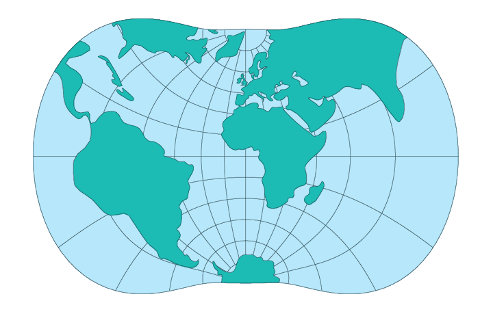

There has been little use of the Transverse Mercator projection for single maps of continental areas. Until recently, the projection was not precisely applied to the ellipsoid for the entire Earth. Ellipsoidal formulas were limited to series for relatively narrow bands. In 1945, E.H. Thompson, and in 1962, L.P. Lee, presented exact or closed formulas allowing calculations of coordinates for the full ellipsoid.
The meridians and parallels of the Transverse Mercator are not straight lines like they were on the regular Mercator, except for the Equator, the central meridian, and each meridian 90º away from the central meridian. The other meridians and parallels are complex curves.
The spherical form in conformal, and its scale error is a function of the distance from the central meridian, similar the the Mercator projection whose scale error is a function of the distance from the Equator. The ellipsoidal form is also conformal, but its scale error is slightly affected by factors other than only distance from the central meridian. With the scale along the central meridian remaining constant, this type of projection is an good projection for lands extending predominately north and south.
The spherical form of the Transverse Mercator has been used by the USGS only recently. In 1979, this projection was chosen for a base map of North America to replace the Bipolar Oblique Conic Conformal projection that had been used for tectonic and other geologic maps.
In the United States the Transverse Mercator projection is used in the State Plane Coordinate System (SPCS) for States that are extended mostly north and south. Excluding narrow states like Delaware, New Hampshire, and New Jersey, the states using the Transverse Mercator projection are divided into two to eight zones, each with its own central meridian, along which the scale is slightly reduced to balance the scale throughout the map. Each zone is designed to maintain scale distortion. Since 1935, several states have passed legislation establishing the SPCS as a permissible system for recording boundary descriptions or point locations.
Starting in the late 1950's, the Transverse Mercator projection has been used by the USGS for nearly all new quadrangles covering the States using the TM Plane Coordinates, but the central meridian and scale factor are those of the SPCS zone. Thus, all quadrangles for a given zone may be mosaicked exactly. The Transverse Mercator projection is used in many other countries for official topographic mapping. The Ordnance Survey of Great Britain began switching from a Transverse Equdistant Cylindrical to the Transverse Mercator in approximately 1920.
The Army Map Service used the Transverse Mercator for two major mapping operations:
(1) a series of 1:250,000-scale quadrangle maps covering the entire country, and
(2) as the geometric basis for the Universal Transverse Mercator (UTM) grid.
Transverse Mercator quadrangle maps fit continuously in a north-south direction, provided they are prepared at the same scale, with the same central meridian, and for the same ellipsoid. They do not fit exactly from east to west, if they have their own central meridians. Using the SPCS or UTM projection, quadrangles and other maps that are properly constructed at the same scale, fit in all directions within the same zone.
* Usage information source:
Snyder, John P. Map Projections - A Working Manual Paper U.S. Geological Survey Professional Paper 1395. Washington: United States Government Printing Office, 1987.